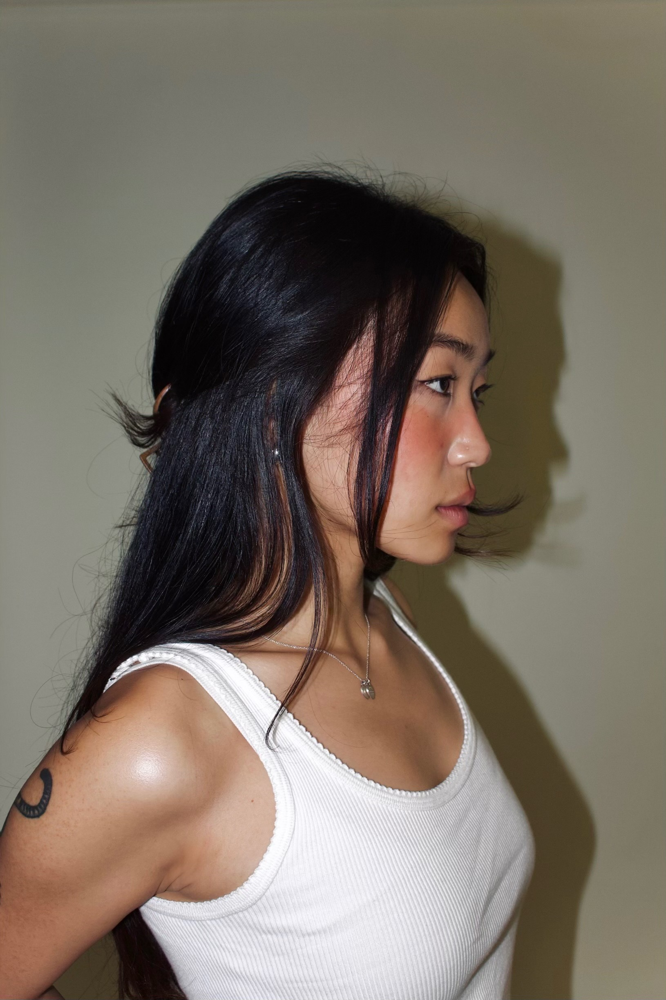

I do more than write.
But writing is always where I start.
Jin Yu is a Toronto-based journalist, copywriter, and communications professional. She writes editorial features, brand copy, press materials, and content strategy — and knows the difference between words that fill space and words that do something.

Selected Work